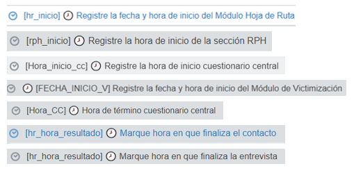
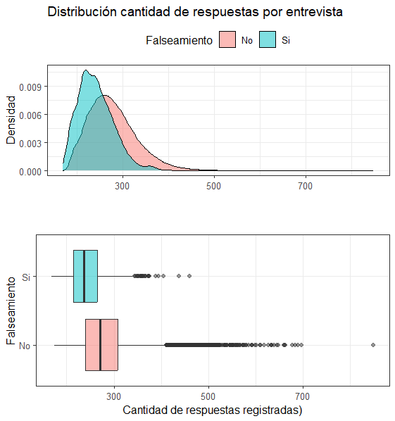
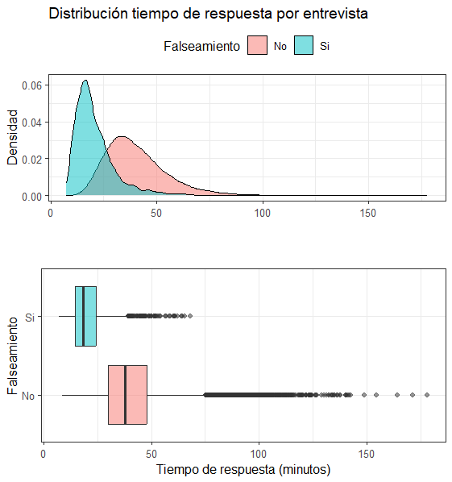
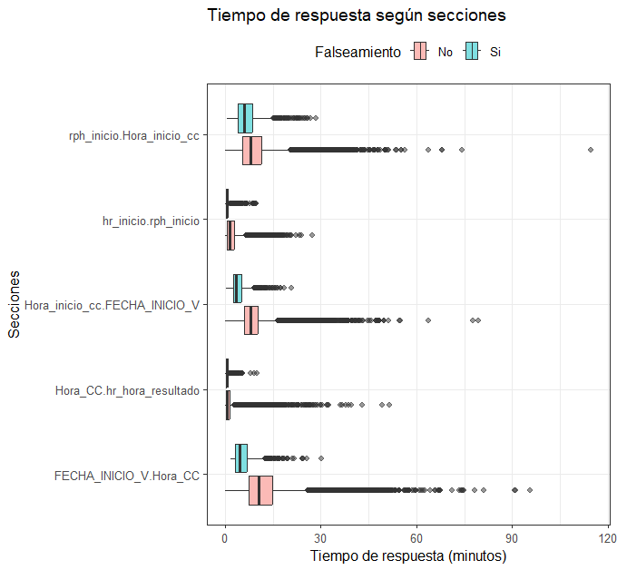
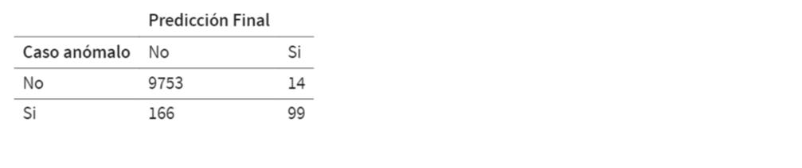
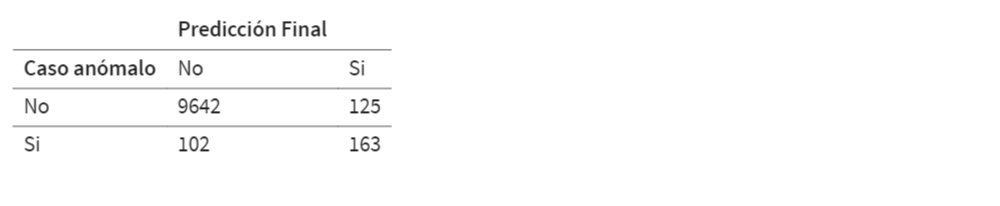
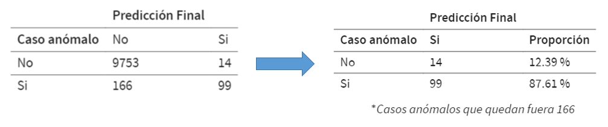
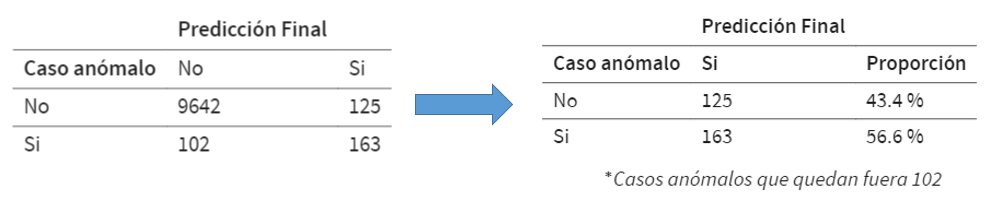

| interview_id | event | responsible | role | timestamp_utc | tz_offset | parameters |
|---|---|---|---|---|---|---|
| 72ab52af4e7846c8a2258ea590099d50 | InterviewCreated | 191851552 | 1 | 2023-10-19 17:48:28 | -03:00:00 | nan |
| 72ab52af4e7846c8a2258ea590099d50 | SupervisorAssigned | 191851552 | 1 | 2023-10-19 17:48:28 | -03:00:00 | nan |
| 72ab52af4e7846c8a2258ea590099d50 | InterviewModeChanged | 191851552 | 1 | 2023-10-19 17:48:28 | -03:00:00 | CAPI|| |
| 72ab52af4e7846c8a2258ea590099d50 | InterviewerAssigned | 191851552 | 1 | 2023-10-19 17:48:28 | -03:00:00 | 191851552 |
| 72ab52af4e7846c8a2258ea590099d50 | KeyAssigned | nan | 0 | 2023-10-19 17:48:28 | -03:00:00 | 47-58-85-14 |
| 72ab52af4e7846c8a2258ea590099d50 | AnswerSet | 191851552 | 1 | 2023-10-19 17:48:28 | -03:00:00 | FOLIO||76354|| |
| 72ab52af4e7846c8a2258ea590099d50 | AnswerSet | 191851552 | 1 | 2023-10-19 17:48:28 | -03:00:00 | REGION||15|| |

Modelo de detección de anomalías utilizando paradatos ENUSC 2023 Proyecto Ciencia de Datos
Mayo 2024
Contenidos
Motivaci√≥n üí°
Detecci√≥n de anomal√≠as üîé üë©‚Äçüíª
- Procesamiento de paradatos
- Modelamiento
- Métricas
- Comparación metodologías
Reflexi√≥n final ü§î
Motivación (1/2)
- El falseamiento es un problema que altera los resultados estadísticos de una encuesta.
- Su detección es difícil, por lo que suele hacerse una vez terminada la encuesta y con un consumo intensivo de recursos humanos.
- Actualmente se supervisa aleatoriamente un 10% de las encuestas.
- Nace la necesidad de crear una herramienta que permita detectar el comportamiento anómalo en las entrevistas durante el levantamiento de la encuesta.
- Implica el procesamiento y análisis de un gran volumen de información (paradatos) en “tiempo real”
Motivación (2/2)
¿Cómo modelamos la información?
- Flujo ETL automatizado que descarga y procesa los paradatos ENUSC.
- En el procesamiento, nos interesa captar el comportamiento de los registros de las diferentes acciones realizadas (medir cantidad de eventos y el tiempo de ejecución).
- Los datos transformados son el input para modelos de detección de anomalías.
- Visualización de resultados de la detección y monitoreo del comportamiento de registros durante el levantamiento.
Detección de anomalías | Procesamiento de paradatos (1/6)
¿Qué son los paradatos?
Los paradatos son todos los registros brutos de cada acción que se realiza en las entrevistas.
Actualmente contamos con 66.375.084 observaciones.
Detección de anomalías | Procesamiento de paradatos (2/6)
Pero en el análisis sólo necesitamos las acciones realizadas por los responsables de la encuesta (encuestadores y encargados de grupo).
Estas acciones consisten en los siguientes eventos reportados:
- AnswerSet, AnswerRemoved, CommentSet, OpenedBySupervisor, RejectedBySupervisor, ApproveBySupervisor, Completed
| Eventos | Cantidad |
|---|---|
| QuestionDeclaredValid | 23687069 |
| VariableSet | 17277229 |
| AnswerSet | 16320886 |
| VariableDisabled | 3924619 |
| VariableEnabled | 1599273 |
| Resumed | 686785 |
| Paused | 686743 |
| OpenedBySupervisor | 309484 |
| ClosedBySupervisor | 295001 |
| QuestionDeclaredInvalid | 250469 |
| AnswerRemoved | 235065 |
| ReceivedBySupervisor | 173746 |
| Completed | 164376 |
| Eventos | Cantidad |
|---|---|
| InterviewerAssigned | 137388 |
| ReceivedByInterviewer | 103057 |
| SupervisorAssigned | 87995 |
| ApproveBySupervisor | 79089 |
| KeyAssigned | 71509 |
| InterviewModeChanged | 71481 |
| InterviewCreated | 71478 |
| RejectedBySupervisor | 65665 |
| CommentSet | 40868 |
| Restarted | 27785 |
| RejectedByHeadquarter | 7869 |
| ApproveByHeadquarter | 86 |
| UnapproveByHeadquarters | 69 |
Detección de anomalías | Procesamiento de paradatos (3/6)
¿Cómo se realiza la estimación de la cantidad de eventos?
Para cada entrevista, realizamos un conteo de eventos registrados según responsable (encuestador o encargado de grupo)
Este conteo se realiza para: AnswerSet, AnswerRemoved, CommentSet, OpenedBySupervisor, RejectedBySupervisor, ApproveBySupervisor, Completed
Ejemplo:
| interview_id | event | role |
|---|---|---|
| 11111 | AnswerSet | 1 |
| 11111 | AnswerSet | 1 |
| 11111 | Completed | 1 |
| 11111 | AnswerSet | 1 |
| 11111 | AnswerSet | 1 |
| 11111 | AnswerSet | 1 |
| 11111 | AnswerSet | 1 |
| interview_id | role | event | Cantidad |
|---|---|---|---|
| 11111 | 1 | AnswerSet | 6 |
| 11111 | 1 | Completed | 1 |
Detección de anomalías | Procesamiento de paradatos (4/6)
¿Cómo se realiza la estimación de los tiempos de respuesta?
Para cada entrevista, se ordena según el tiempo en que se registran los eventos.
Calculamos la diferencia de tiempo entre eventos consecutivos.
- Si la diferencia de tiempo es mayor al umbral definido para cada responsable, esta será eliminada pues es considerado como punto de inicio de otra visita o revisión.
Ejemplo:
| interview_id | event | timestamp_utc_TZ | role | Diferencia_tiempo |
|---|---|---|---|---|
| 11111 | AnswerSet | 2023-10-27 15:15:20 | 1 | NA secs |
| 11111 | AnswerSet | 2023-10-27 15:15:22 | 1 | 2 secs |
| 11111 | Completed | 2023-10-27 15:15:27 | 1 | 5 secs |
| 11111 | AnswerSet | 2023-10-31 00:06:00 | 1 | 291033 secs |
| 11111 | AnswerSet | 2023-10-31 00:06:27 | 1 | 27 secs |
| 11111 | AnswerSet | 2023-10-31 00:06:28 | 1 | 1 secs |
| 11111 | AnswerSet | 2023-10-31 00:06:29 | 1 | 1 secs |
Tiempo total acciones: 36
Detección de anomalías | Procesamiento de paradatos (5/6)
¿Cómo se estima los tiempos de respuesta en las diferentes secciones (módulos)?
Al igual que en el caso anterior, ordenaremos según el tiempo de registro de eventos
Calculamos la diferencia de tiempo entre eventos consecutivos, pero tomaremos como tiempo inicial cuando se registre la fecha de inicio de cada sección:

Detección de anomalías | Procesamiento de paradatos (6/6)
Ejemplo de tabla procesada que resume las acciones generadas en cada entrevista:
| interview_id | time_answer_interviewer | time_answer_supervisor | n_answer_interviewer |
|---|---|---|---|
| 1000000 | 1355 | 391 | 265 |
| 1000001 | 2759 | 258 | 316 |
| 1000002 | 1553 | 873 | 150 |
| 1000003 | 1427 | 1231 | 110 |
| interview_id | n_completed_interviewer | n_commentset_interviewer | n_rejected_supervisor | reg_cdf |
|---|---|---|---|---|
| 1000000 | 2 | 0 | 0 | 11 |
| 1000001 | 1 | 0 | 0 | 11 |
| 1000002 | 3 | 0 | 3 | 31 |
| 1000003 | 6 | 4 | 6 | 33 |
Detección de anomalías | Descripción general (1/4)
Para identificar comportamientos anómalos, utilizaremos la información a nivel de entrevista, es decir, en una fila existe información de una entrevista (interview_id).
Adicionalmente, trabajaremos solo con los casos en que la entrevista haya sido realizada en el dispositivo DMC (se omiten entrevistas realizadas en papel o por teléfono) y tengan un estado final completa o falseada (CDF 11 o 45).
En total, contamos con 50.159 observaciones, las cuales se distribuyen como:
Proporción* Encuesta normal 97.35% Encuesta falseada 2.64% * se incluye información de sectores que tuvieron que ser reencuestados por casos de falsificación
Detección de anomalías | Descripción general (3/4)
Veamos como se distribuye la cantidad y tiempos de respuestas totales en las entrevistas para los encuestadores actualmente:


Detección de anomalías | Descripción general (4/4)
Cantidad de respuestas y tiempos de las entrevistas para los encuestadores a nivel de secciones:


Detección de anomalías | Modelamiento
Dada la naturaleza desbalanceada de los datos, se decidió usar dos metodologías de machine learning para identificar el comportamiento anómalo en las entrevistas:
Modelo XGBoost (supervisado)
Modelo K-means (no supervisado)
Para ello, se utilizaron 15 variables:
- Tiempo de respuesta (4)
- Cantidad de respuestas (6)
- Acciones de encargado de grupo (3)
- Acciones encuestador (1)
- Visitas encuestador (1)
Detección de anomalías | Métricas (1/3)
1. Modelo XGBoost
Matriz de confusión (set de testeo):
| Predicción XGB | ||
|---|---|---|
| Caso anómalo | No | Si |
| No | 9734 | 33 |
| Si | 123 | 142 |
Métricas (set de testeo):
| Tasa de predicción positiva | 0.5358 |
| F1 | 0.6455 |
| Exactitud (accuracy) | 0.9844 |
Detección de anomalías | Métricas (2/3)
2. Modelo K-means
El cluster clasificado como Anómalo se distingue por tener tiempos de respuestas bajos en comparación a los demás grupos*.
Encuesta normal Encuesta Anómala tiempo_respuesta_encuestador 50.87 33.47 tiempo_respuesta_supervisor 13.29 3.38 tiempo_InicioV_Termino_CC 16.16 9.83 n_visita_encuestador 3.65 2.15 n_respuesta_encuestador 297.69 238.35 n_respuesta_InicioV_Termino_CC 86.57 69.83 * tiempos de respuesta en minutos
Detección de anomalías | Métricas (3/3)
2. Modelo K-means
Matriz de confusión (set de testeo):
| Predicción Kmeans | ||
|---|---|---|
| Caso anómalo | No | Si |
| No | 9661 | 106 |
| Si | 145 | 120 |
Métricas (set de testeo):
| Tasa de predicción positiva | 0.4528 |
| F1 | 0.4888 |
| Exactitud (accuracy) | 0.975 |
Comparación metodologías (1/3)
¿Cómo tomamos las decisiones?
Recordemos que la metodología actual consiste en realizar una supervisión aleatoria del 10% del total de entrevistas.
Por ejemplo, seleccionemos aleatoriamente el 10% de nuestro set de testeo (seleccionamos y supervisamos 1003 observaciones):
Comportamiento anómalo n Proporción No 982 97.91 % Si 21 2.09 % \(^*\)Casos anómalos que quedan fuera 244
Comparación metodologías (2/3)
¿Cómo tomamos las decisiones?
Si se detectan casos anómalos en los modelos XGB y K-means:

Si se detectan casos anómalos en el modelo XGB o el modelo K-means:

Comparación metodologías (2/3)
¿Cómo tomamos las decisiones?
Si se detectan casos anómalos en los modelos XGB y K-means:

Si se detectan casos anómalos en el modelo XGB o el modelo K-means:

Comparación metodologías (3/3)
¿Cómo tomamos las decisiones?
Selección aleatoria del 10% set de testeo, supervisamos 1003 observaciones:
Caso anómalo n Proporción No 982 97.91 % Si 21 2.09 % \(^*\)Casos anómalos que quedan fuera 244
Si se detectan casos anómalos en los modelos XGB y K-means, supervisamos 113 observaciones:
Predicción Final Caso anómalo Si Proporción No 14 12.39 % Si 99 87.61 % \(^*\)Casos anómalos que quedan fuera 166
Si se detectan casos anómalos en el modelo XGB o el modelo K-means, supervisamos 288 observaciones:
Predicción Final Caso anómalo Si Proporción No 125 43.4 % Si 163 56.6 % \(^*\)Casos anómalos que quedan fuera 102
Reflexión final
A través del machine learning, buscamos ayudar a identificar casos con comportamiento anómalo en la encuesta, complementando el trabajo del equipo de supervisión.
Actualmente, estamos preparando un servicio experimental para la ENUSC 2024 que contará con un dashboard para monitorear el comportamiento de los registros ingresados.
Si el servicio funciona con éxito, se evaluará extender la metodología a otras encuestas.

Modelo de detección de anomalías utilizando paradatos ENUSC 2023 Proyecto Ciencia de Datos
Mayo 2024
Anexo
Anexo I: Modelamiento
Modelo XGBoost:
- Se realizó un tunning de parámetros, usando una grilla y un cross-validation con 15 k-fold.
Modelo K-means:
Para poder identificar el comportamiento de las encuestas anómalas, se realizaron 50 clusters, en donde clasificaremos como encuesta anómala a los clusters que posean mas del 50% de proporción de anomalía.
Por ejemplo:
Cluster N° entrevistas normales N° entrevistas anómalas Proporción 1 30 20 0.4 2 20 25 0.55 … … … … 50 70 32 0.31